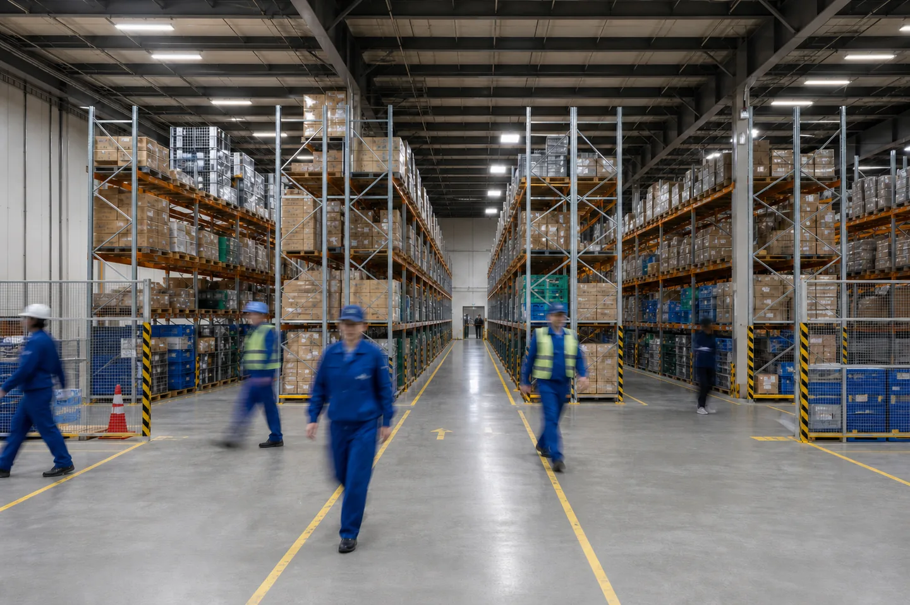
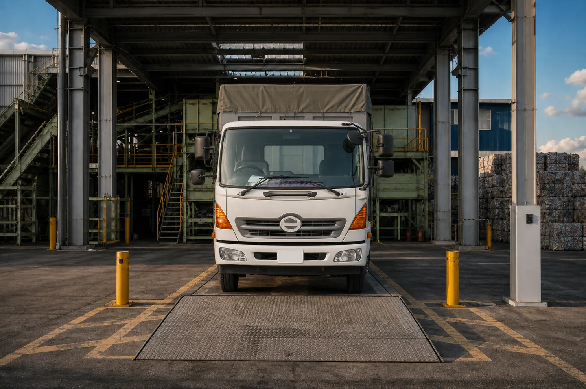

倉庫・運送の現場では、人手不足、教育負荷、安全管理、品質のばらつき、紙やExcelによる管理、ベテラン依存の判断といった課題が同時に発生しています。
私たちは、現場の流れを理解したうえで業務設計から見直し、課題の整理から実装・定着までを一貫して支援します。実際に現場を運営する立場と、システムをつくる立場の両方から、使われる仕組みをつくることを重視しています。
運ぶ・保管する・処理するという実務と、それを支える仕組みづくりの両方に取り組んでいます。事業フェーズや現場の状況に合わせて、必要な支援から着手いただけます。
保管・入出荷・流通加工・配送手配まで、必要な範囲を切り出してご依頼いただけます。作業手順の設計と倉庫管理システムの整備をセットで行うことで、誰が担当しても同じ品質で回る現場づくりを支援します。
レイアウト、動線、人員配置、標準作業手順を設計します。作業のばらつきを減らし、教育しやすい現場づくりを支援します。
入荷検品、保管、ピッキング、流通加工、出荷、返品処理までを担います。在庫精度と出荷リードタイムを指標に運用します。
倉庫管理システムの選定・導入・カスタマイズに内製で対応します。マスタ整備やEC・基幹システムとの連携までを含めて整えます。
他社倉庫からの移管、新拠点の立ち上げ、繁忙期のスポット対応に対応します。切り替え計画から現場教育までを支援します。
物量、SKU数、出荷波動、作業内容を確認し、対応可否と課題を整理します。
作業手順と人員計画を設計し、保管料・作業料の内訳を明示してご提示します。
移管計画に沿って稼働します。稼働後もKPIをもとに継続的な改善を行います。

02 SANPAI DX搬入の予約受付、受入可能量の判断、計量と実績の記録。中間処理業の受入業務は、いまも電話・FAX・紙台帳と担当者の記憶に支えられています。私たちは、この業務に特化したソフトウェアの開発に取り組んでいます。
その都度、担当者が空き状況を確認して回答するため、担当者が不在だと対応が止まります。
品目ごとの残キャパシティが担当者の頭の中にあり、当日になって受けきれないことがあります。
紙の伝票を後から転記し、実績の集計は月末にまとめて手作業で行っています。
排出事業者・収集運搬業者からの申込みをWebで受け付け、受付状況を社内で共有できます。
処理能力と許可量にもとづいて受入可能量を判定し、無理な予約の発生を防ぎます。
受付データがそのまま計量・実績につながり、集計や報告にかかる手作業を削減します。
「何から手をつけるか」の整理からご相談いただけます。既存業務をそのままシステムに置き換えるのではなく、人が判断すべき業務とシステム・AIに任せられる処理を切り分けたうえで、現場に定着する形での改善を設計します。
現場ヒアリング、業務フロー整理、ボトルネックの特定、改善テーマの優先順位づけを行います。
WMS・TMS・基幹システムの要件定義を担当します。現場で運用できる粒度まで業務要件を整理します。
SaaSの比較検討、ベンダー選定、導入プロジェクトの推進、既存システムとの連携設計を支援します。
既製品では合わない領域は自社で開発します。小さく開発し、現場で検証しながら段階的に広げます。
帳票・請求書の読み取り、社内ナレッジ検索、報告書の分類・傾向分析などを、現場に定着する形で導入します。
KPI設計とダッシュボード構築を行い、日々の意思決定と改善につながる形にデータを整えます。
物流の現場では、システムを導入すること自体が目的になり、結果として使われないまま終わってしまうことが少なくありません。現場のオペレーションを理解している人間が設計と実装まで担うことで、実際に使われ、成果につながる仕組みをつくれると考えています。
大阪市立大学を卒業後、アマゾンジャパン合同会社に入社。フルフィルメントセンター事業本部で物流拠点の新規設立や生産管理に従事したのち、SCM本部で事業開発および倉庫管理システムの開発を担当。株式会社TRiCERAでは、事業部長として越境ECの物流オペレーション管理と新規事業立ち上げを統括。2024年に退社後、フリーランスとして事業開発コンサルタントとして、AIエージェント事業の新規立ち上げを支援。2026年に株式会社ハシゴロジを設立し、代表取締役に就任。
具体的な依頼内容が決まっていなくても問題ありません。
倉庫業務の委託可否、システム化の進め方、改善テーマの優先順位づけからご相談いただけます。
| 会社名 | 株式会社ハシゴロジ（Hashigologi Inc.） |
|---|---|
| 代表者 | 代表取締役 髙橋 優大 |
| 設立 | 2026年6月 |
| 資本金 | 200万円 |
| 所在地 | 東京都目黒区八雲２−２０−１２ |
| 事業内容 | 3PL事業 産業廃棄物業者向けDX事業 物流コンサルティング・受託システム開発 |
| お問い合わせ | takayuda@hashigo-logi.com |